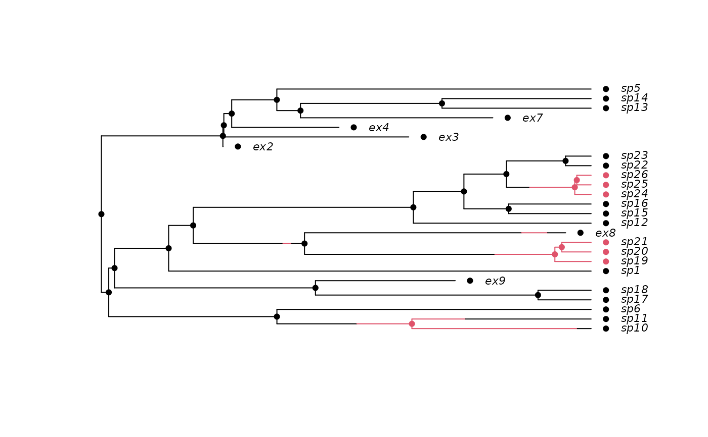
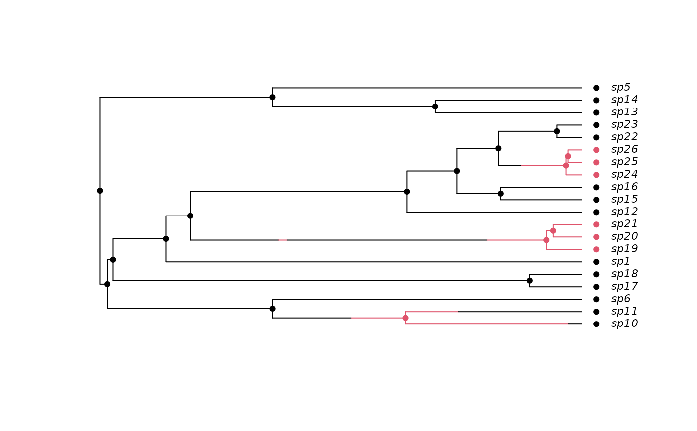

plot.history.RdBoth stochastic character mapping and simulation may create character histories. This function plots these histories
An object of class history.discrete containing a
discrete character history. This could be made by
history.from.sim.discrete.
The phylogeny used to generate the history. Few checks are made to make sure that this is really correct, and all manner of terrible things might happen if these are not compatible. This may change in future.
A vector of colours.
The different state types. Probably best to leave alone.
Plot x-limits (optional).
Plot y-limits (optional).
Logical: show the species tip labels?
Logical: show the species node labels?
Logical: draw a symbol at the tips to indicate tip state?
Logical: draw a symbol at the nodes to indicate node state?
Supress drawing of margins around the plot
Font and symbol scaling factor.
Font used for tip and node labels (see
par).
String rotation for tip and node labels.
Label adjustment (see par).
Horizontal offset of tip and node labels, in branch length units.
Line width
Additional arguments (currently ignored)
This attempts to be as compatible with ape's plotting functions
as possible, but currently implements only right-facing cladegrams.
## Due to a change in sample() behaviour in newer R it is necessary to
## use an older algorithm to replicate the previous examples
if (getRversion() >= "3.6.0") {
RNGkind(sample.kind = "Rounding")
}
#> Warning: non-uniform 'Rounding' sampler used
## Simulate a tree, but retain extinct species.
pars <- c(.1, .2, .03, .04, 0.05, 0.1) # BiSSE pars
set.seed(2)
phy <- tree.bisse(pars, 20, x0=0, include.extinct=TRUE)
## Create a 'history' from the information produced by the simulation
## and plot this
h <- history.from.sim.discrete(phy, 0:1)
plot(h, phy, cex=.7)

## Prune the extinct taxa.
phy2 <- prune(phy)
## The history must be recreated for this pruned tree:
h2 <- history.from.sim.discrete(phy2, 0:1)
plot(h2, phy2, cex=.7)
